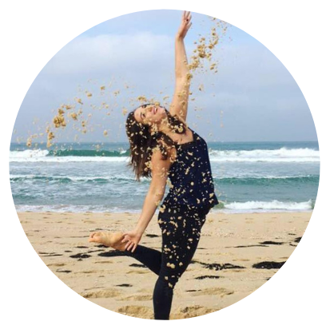
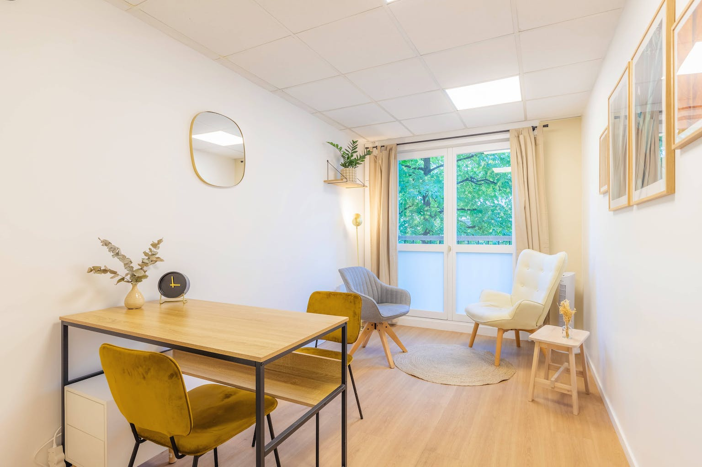

La sophrologie
Qu'est-ce que c'est ?
Etre bien dans son corps, dans sa tête, dans sa vie !
La sophrologie est une méthode visant à prendre conscience de son corps et de ses potentiels pour une meilleure harmonie physique et mentale.
Il s’agit d’une discipline psycho-corporelle : en sophrologie, nous nous concentrons sur les sensations du corps, nous apprenons à nous libérer des tensions physiques et des préoccupations mentales pour laisser place à de nouveaux possibles. La sophrologie permet alors d’atteindre, de retrouver ou de protéger son propre équilibre de vie.
L’objectif est d’être à l’écoute de son corps et de ses ressentis pour avoir une influence positive sur ces derniers et ainsi être plus à l’aise avec soi-même, et donc avec les autres.
En sophrologie, nous atteignons un niveau de conscience plus ouvert qui aide à mettre en avant ses capacités et ses valeurs (ce qui nous tient à cœur, nous anime…) afin de vivre en accord avec ce que l’on est. C’est un précieux outil de soutien au quotidien : chacun établit ses propres stratégies en faisant appel à ses ressources personnelles pour en faire de solides atouts, et ainsi mieux traverser les turbulences de la vie.
En pratique
A travers des exercices simples, nous abordons les 3 temps de la vie : nous nous appuyons sur les expériences positives vécues pour améliorer notre confort au présent et ainsi nous déployer pleinement vers notre avenir.
Nous utilisons des techniques universelles à des fins spécifiques telles que:
- la respiration,
- la méditation,
- la concentration,
- la relaxation dynamique (des mouvements doux pour prendre conscience
- les évocations positives (visualisations et sensations corporelles agréables pour
- les vibrations sonores (afin de mobiliser son énergie, de s’affirmer et d’apprécier les résonances du corps).
de son corps et relâcher les tensions musculaires),
apprécier son quotidien et envisager sereinement son futur),
Déroulement des séances
Tout rendez-vous est constitué d’une séance de sophrologie (environ 15 min) encadrée par deux temps d’échange : le rendez-vous dure de 45 min à 1h.
Les séances se pratiquent assis ou debout, les yeux en général fermés pour se concentrer sur soi, en suivant les paroles du sophrologue, et à travers une succession d’exercices proposés sur-mesure.
Je vous propose des séances en individuel, en cabinet ou en visio, pour un accompagnement personnalisé. Vous pouvez enregistrer la séance de sophrologie sur votre téléphone afin de la pratiquer en autonomie chez vous.